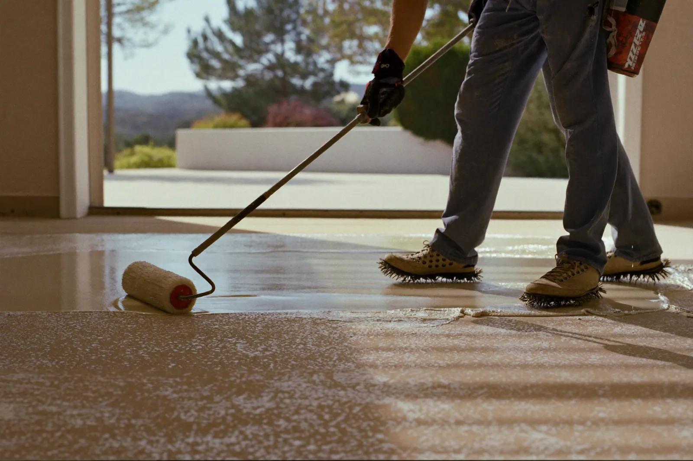

A fast-curing, UV-stable coating that will not turn yellow in the sun, built for garages that sit with the door open on bright afternoons.
Call (909) 550-6756 for a Free EstimateTell us about the floor. We reply the same working day to book a free on-site look.
Prefer to talk? Call (909) 550-6756

Polyaspartic garage floor coating in Fontana is the go-to choice for homeowners who want their garage back fast and a floor that keeps its color in the sun. It is a type of polyurea that cures in hours instead of days and holds up to UV light far better than standard epoxy. Most installs are finished in one day.
A polyaspartic floor coating starts with the same diamond grinding and crack repair as any good garage floor. Fast-curing coatings bond to what they touch right away, so the prep has to be done right the first time.
A base coat goes down, flakes are broadcast into it, and the floor is scraped and vacuumed once it sets. Then a clear polyaspartic topcoat is rolled over the whole surface.
Polyaspartic sets up quickly in the bucket, especially in summer heat. Crews mix small batches and work in sections, which is why experience with this material matters more than with slower epoxy.
If the door is open on sunny afternoons, UV light hits the floor. Polyaspartic keeps its color where standard epoxy slowly yellows.
Foot traffic is usually fine the same evening and cars the next day or two, depending on temperature.
A hard polyaspartic topcoat stands up well to hot tire pickup on summer days.
Polyaspartic cures across a wider temperature range than many epoxies, which helps in heat waves and on chilly winter mornings.
A polyaspartic topcoat can refresh a sound, well-bonded coating after a light sanding.
UV stability makes it a better fit than epoxy for floors that are partly outdoors.
Standard epoxy turns yellow because UV light breaks down the resin at its surface over time. The effect is called ambering, and it is most noticeable on light colors and clear coats near an open garage door.
Inland Empire sun is strong most of the year, so a garage that sits open while the kids play in the driveway gets plenty of UV exposure. The yellowing is cosmetic, but it does not come back out.
Polyaspartic is aliphatic, which means its chemistry is not broken down the same way by UV light. Using it as the topcoat keeps the floor looking like it did on install day.
The cost of a polyaspartic coating depends on the size of the floor, how much grinding and repair the slab needs, and whether the floor is a full polyaspartic system or an epoxy base with a polyaspartic topcoat.
Flake density, stem wall coating and anti-slip texture are other choices that change the final quote. Floors with moisture issues may also need a special primer before any coating goes down.
We look at every floor in person before we quote, and the estimate is free. Call (909) 550-6756 or use the polyaspartic estimate request form to set up a visit.
Both make an excellent garage floor. Most of our garage systems actually combine them: an epoxy base for build and bonding, with a polyaspartic topcoat for sun and wear.
| Polyaspartic | Standard epoxy | |
|---|---|---|
| UV / sun exposure | Stays color-stable | Ambers over time |
| Install time | Often one day | Usually two days |
| Return to driving | About 24–48 hours | About 5–7 days |
| Working time | Short — needs an experienced crew | Longer, more forgiving |
| Best for | Sunny garages, patios, fast turnaround | Base coats, indoor floors, metallic designs |
If your garage door stays closed most of the day, an epoxy system with a durable topcoat works well. If the floor sees sun, polyaspartic is the safer choice. See our garage floor epoxy systems for the full flake process.
A polyaspartic floor is usually ready for foot traffic within a few hours and for cars within about 24 to 48 hours. Hot weather speeds the cure, while cool mornings slow it a little.
Polyaspartic is the better topcoat for garages that get sun because it does not yellow and it cures fast. Epoxy is still a strong base coat, so many of the best garage floors use both together.
Polyaspartic can go over an existing epoxy floor if the old coating is still firmly bonded. The surface is sanded to give it grip first. A coating that is peeling has to be ground off completely.
A polyaspartic floor is worth it for most garages that get sunlight or that need to be back in use quickly. The color stays true, the floor stands up to hot tires, and the job is often done in a single day.
Call for a free on-site estimate on a one-day polyaspartic floor. We check the slab and leave you a written quote.
Call (909) 550-6756 Now